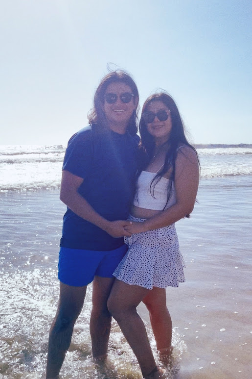

<main>
	<head>
		<!--link rel="stylesheet" href="../../assets/pics/icons/font-awesome-4.7.0/css/font-awesome.min.css">
		<script src="https://kit.fontawesome.com/5a95d5245f.js" crossorigin="anonymous"></script-->
	</head>
	<body>
		<div class="book">
			<div class="book-cover">
				<div>
					<h1>{{ churchInfo }}</h1>
					<h1>{{ churchInfo2 }}</h1>
				</div>

			</div>
			<div class="book-content">
				<div class="col text-center">
					<h1> La Misa se celebrará en Ixtapa </h1>
					<h1> {{ churchName}} </h1>
				</div>
				<div class="col text-center">
					
					<h3> {{ address }} </h3>
					<h3> {{ address2 }} </h3>
					<a href="https://maps.app.goo.gl/gVdMyRbDoosGuEFf8">
						
					</a>
					<p> Ver ubicación </p>

					
					<h3> A las 13:00 hrs </h3>

					<div class="line"></div>

					
					<h2> Nota Importante </h2>
					<p> Toma tus precauciones para llegar a la iglesia </p>
					<p> Te recordamos que te tomará aproximadamente 15 a 20 mins </p>
					<p> Para llegar de Zihuatanejo a Ixtapa </p>
					<p> La manera más fácil de moverte es en Taxi </p>
					

					<!--img src="../../assets/pics/church2.png"-->
										<!-- carousel -->
					<div id="carouselExample" class="carousel slide" data-bs-ride="carousel" data-bs-interval="3000">
						<div class="carousel-inner">
							<div class="carousel-item active">
								
							</div>
							<div class="carousel-item">
								
							</div>
							<div class="carousel-item">
								
							</div>
						</div>
						<button class="carousel-control-prev" type="button" data-bs-target="#carouselExample" data-bs-slide="prev">
							<span class="carousel-control-prev-icon" aria-hidden="true"></span>
							<span class="visually-hidden">Previous</span>
						</button>
						<button class="carousel-control-next" type="button" data-bs-target="#carouselExample" data-bs-slide="next">
							<span class="carousel-control-next-icon" aria-hidden="true"></span>
							<span class="visually-hidden">Next</span>
						</button>
					</div>
					<!-- End carousel -->
				</div>
			</div>
		</div>
	</body>
</main>